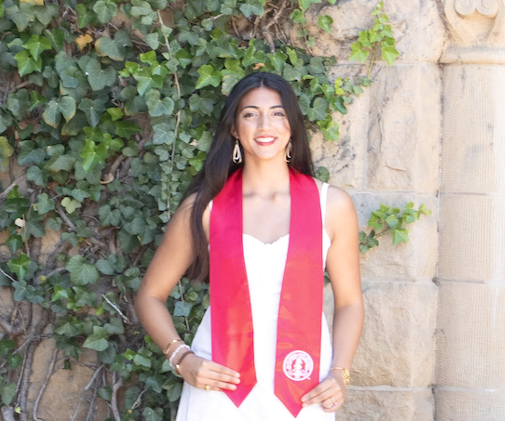
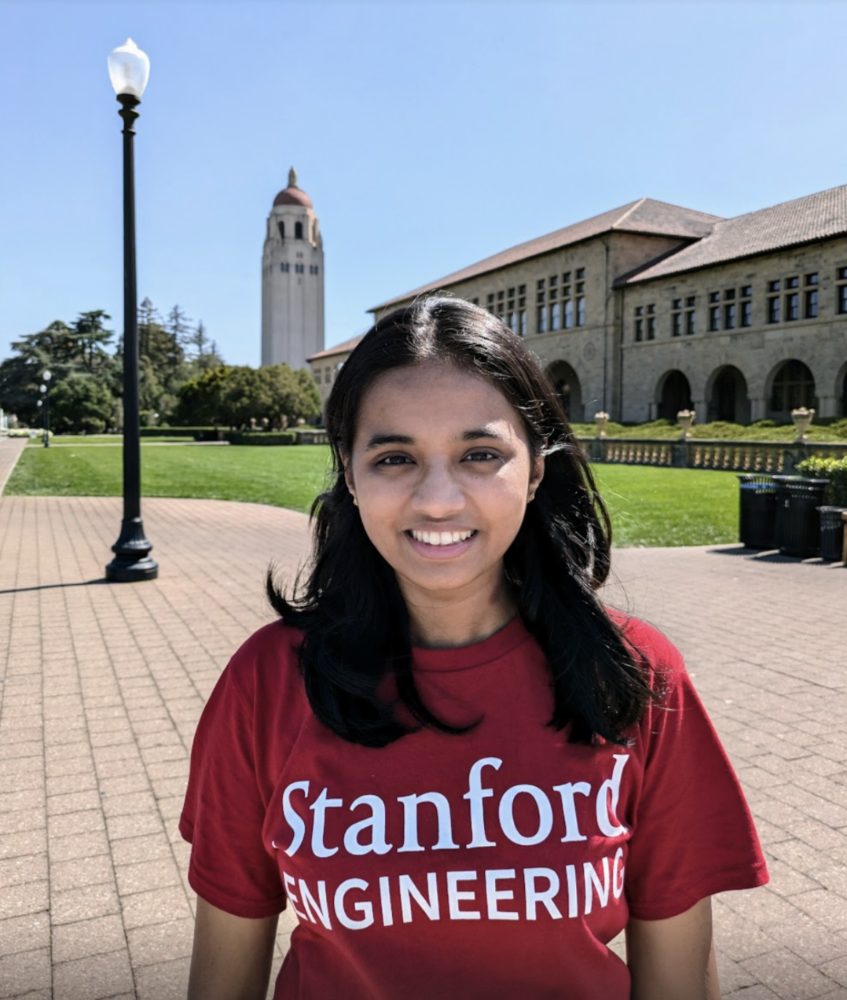
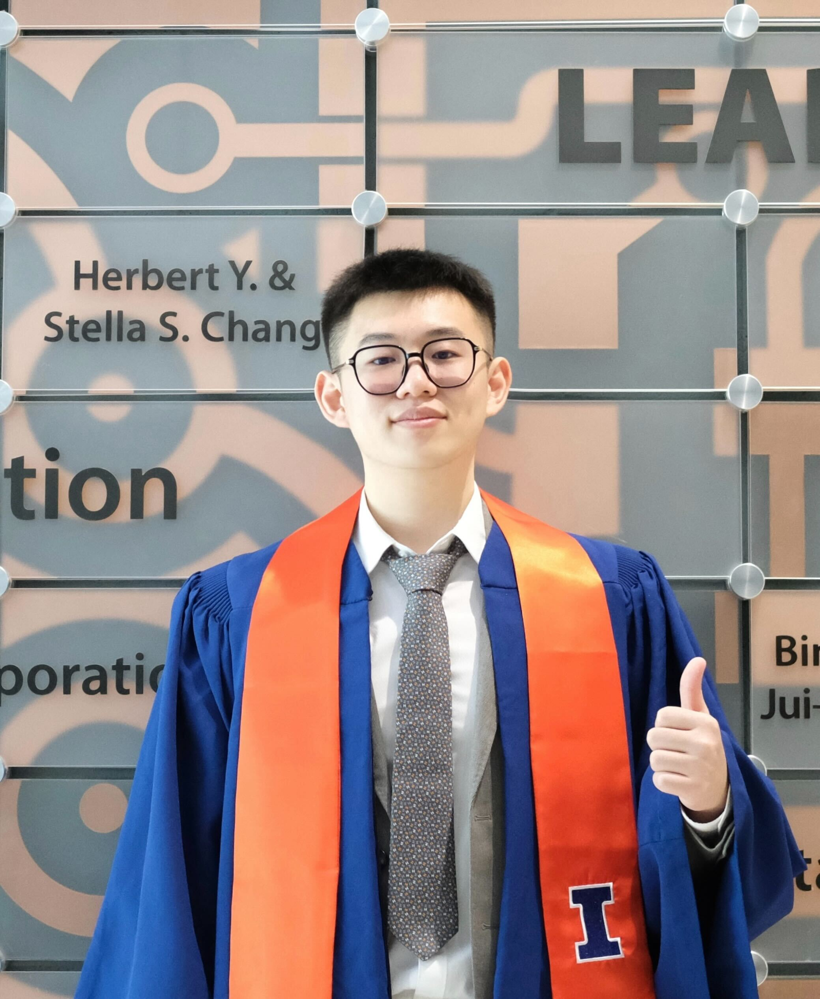
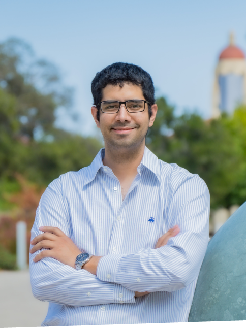
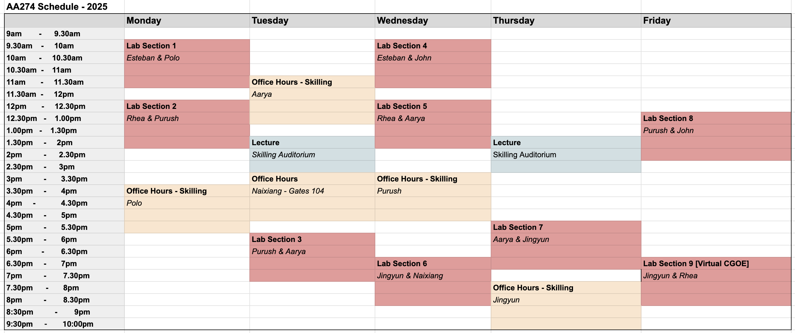

Welcome to CS237A!
AA 274a / CS 237A / EE 260A
Principles of Robot Autonomy I
Fall 2025
Course Description
This course will cover basic principles for endowing mobile autonomous robots with planning, perception, and decision-making capabilities. Algorithmic approaches for trajectory optimization; robot motion planning; robot perception, localization, and simultaneous localization and mapping (SLAM); state machines. Extensive use of the Robot Operating System (ROS) for demonstrations and hands-on activities. Prerequisites: CS 106A or equivalent, CME 100 or equivalent (for calculus, linear algebra), and CME 106 or equivalent (for probability theory).
Instructors
 Mac Schwager
Mac Schwager
|
|---|
Course Assistants
|  Rhea Malhotra |  Aarya Sumuk | Esteban Rincon |  Naixiang Gao |
|---|---|---|---|
| Purush Mani |  Polo Contreras | John Tucker | Jingyun Yang |
Lecture Times
Tue, Thu 1:30 PM - 2:50 PM at Skilling Auditorium
Students are expected to attend one 2-hour section each week. Details about lab signups will be posted Week 2.
Office Hours
📚 CA Office Hour Schedule

If you're having trouble with ROS/UTM or your personal machine, you are welcome to use the Skilling Lab computers during any office hours or any lab section to complete your homework.
For missing labs, please attend office hours to make up the lab and get checked off.
Syllabus
Resources
- EdStem -- for discussions and questions.
- Gradescope -- for homework and project submissions.
- Overleaf LaTeX Template -- for homework and reports.
- Canvas -- for course content, recordings, and announcements.
Exams
Exams for this course will be in a take-home format. The midterm exam will be a take-home given in Week 6 of the course (details on distribution and submission times will be announced in lecture). The exam will be open for a 48 hour period, in which a 5 hour window can be used to take the exam. The Final exam, also a take-home, will be sent out on the first day of finals week, and due at the end of the official scheduled final time on Gradescope (Tuesday December 9, at 6:30 PM PST).
Course Grade Calculation
- 20% – Homeworks (5 × 4% each)
- 40% – Sections (8 × 5% each)
- 15% – Midterm
- 25% – Final
Tentative Schedule
| Date | Topic | Homework | Lab |
|---|---|---|---|
| 09/23 | Course overview, perception-action loop, maps | Lab 0: Install ROS | |
| 09/25 | Maps, Robot geometry, Coordinate frames and SE(2)/SE(3) transforms | HW1 out | |
| 09/30 | Collision, C-space, motion models. Path planning I: A* | Lab 1: Command line, Git, Python | |
| 10/02 | Path planning II: RRT, RRT* | ||
| 10/07 | Trajectory optimization | HW1 due, HW2 out | Lab 2: ROS basics |
| 10/09 | Trajectory following: PID, LQR, gain scheduled LQR | ||
| 10/14 | Robotic sensors: IMU, lidar, cameras, RGB-D. Point clouds & ICP | Lab 3: RViz, Turtlebot | |
| 10/16 | Pinhole camera models, camera calibration | HW2 due, HW3 Out | |
| 10/21 | Structure from Motion (SfM), features, RANSAC | Lab 4: Heading controller | |
| 10/23 | Learning based perception, semantic perception | ||
| 10/28 | SLAM intro, factor graphs, PGO | HW3 due | Lab 5: Nav to goal |
| 10/29 | Midterm: 48 hour window | Midterm out | |
| 10/30 | Pose graph opt, bundle adjustment | ||
| 10/31 | Midterm: 48 hour window window | Midterm due | |
| 11/04 | No Lecture (Democracy Day) | HW4 out | |
| 11/06 | Bayes Rule, RVs, Occ. mapping (Recorded Lecture, Mac traveling) | ||
| 11/11 | Occ, mapping, frontier exploration | Lab 6: Object detection | |
| 11/13 | Gaussian RVs, Kalman Filtering, EKF, UKF | HW4 due, HW5 out | |
| 11/18 | Particle Filtering, Monte Carlo localization | Lab 7: Frontier exploration | |
| 11/20 | Guest Lecture | ||
| 11/25 | No lecture (Thanksgiving) | ||
| 11/27 | No lecture (Thanksgiving) | ||
| 12/02 | EKF Localization, obj tracking | HW5 due | Lab 8: Makeup |
| 12/04 | Advanced Topics: Imitation learning, VLAs, 3DGS for sim2real, world models | ||
| 12/07 | 48 hour window take home final start | Final Exam out, 6:30pm | |
| 12/09 | 48 hour window take home final start | Final Exam due, 6:30pm |
Follow this link to access the course website for the previous edition of Principle of Robot Autonomy I, Fall 2024.